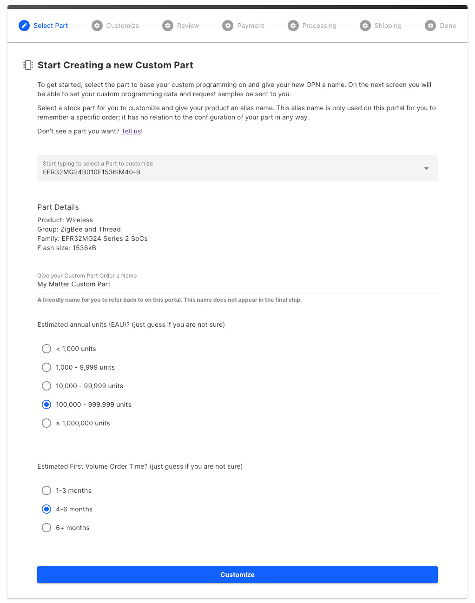
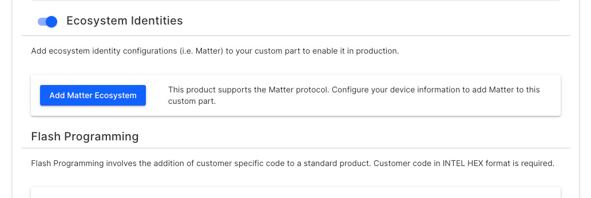
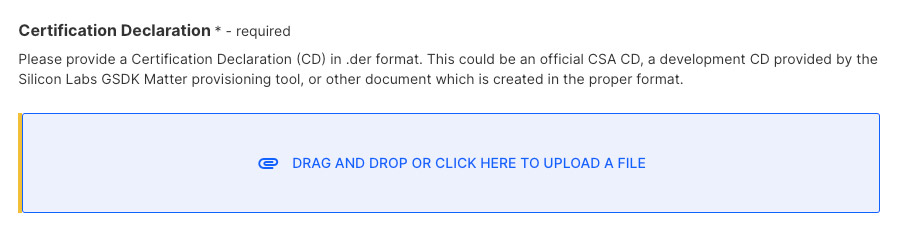
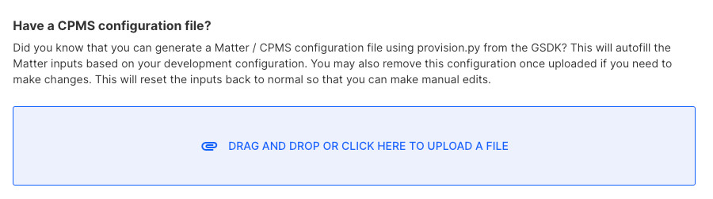
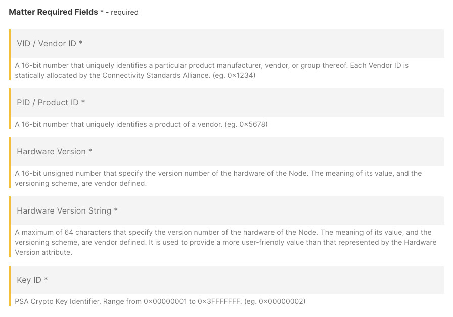
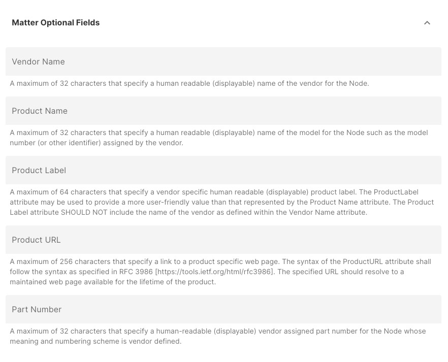
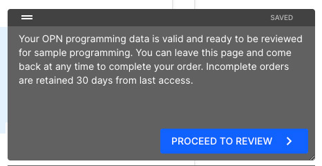

Using Custom Part Manufacturing Services (CPMS)
Silicon Labs offers Matter support through our Custom Part Manufacturing Services (CPMS). Your organization can order your Matter devices directly from Silicon Labs or a third-party vendor utilizing our CPMS services. Silicon Labs is one of the few providers that can program your information directly to silicon through secure automation with our partner, Kudelski Security.
What is CPMS?
CPMS allows you to customize Silicon Labs hardware – wireless SoCs, modules, MCUs – at the factory. The CPMS self-service web portal guides you through the customization process and its various customizable features and settings. You can place orders for customized test and production units to our factories securely via the CPMS portal.
Unlike traditional flash programming, CPMS is a secure provisioning service that enables you to customize your chips with highly advanced features. These include secure boot, secure debug, encrypted OTA, public, private, and secret keys, secure identity certificates, and more. The custom features, identities, and certificates are injected into the hardware securely, quickly, and cost efficiently through Silicon Lab’s own factories.
Why CPMS?
Securing an IoT device is a highly complicated and costly process. You must generate public and private keys for secure boot and secure debug, sign code with a private key, store all the private keys in a Hardware Security Module (HSM), place the public keys for secure boot and secure debug in one-time-programmable (OTP) memory, flip OTP bits for secure boot and secure debug, and flash the encrypted code and identity certificates within the hardware. CPMS streamlines the programming part of this process for you. Even the most advanced security features, certificates, and identities can be programmed in a secure, fast, and cost-efficient way in Silicon Lab’s factories.
How Does Matter Fit into the CPMS Equation?
Silicon Labs is the only IoT-embedded solution provider at this time offering a secure provisioning service for Matter devices at scale. Silicon Labs has partnered with Kudelski Security to provide scalable access to Device Attestation Certificates (DACs) for your Matter devices. Kudelski has “30+ years of experience securely provisioning more than 500 million devices”. Rest assured that your secrets are stored in HSMs both on and offline to provide maximum security for your secret key material. Learn more about Security.
CPMS allows you to configure your device and receive production samples for a minimal cost before making a full production order. To configure your Matter settings, there are two ways to accomplish this with Silicon Labs tooling.
If your organization uses Simplicity Studio, Silicon Lab’s IoT IDE, we have provided a built-in utility that will output a JSON formatted data file that can be uploaded directly into CPMS. This data file will fill out the necessary Matter information for you. This is the preferred method as it reduces the potential for errors and/or typos.
The second method is to simply provide the required information through the CPMS web forms. This is a minimal process that includes important attestation information such as your Vendor ID (VID), Product ID (PID), Certification Declaration, and other inputs required to generate the Matter certificate chain.
CPMS has automated integrations with Kudelski to obtain the unique DACs for each device at the time of manufacturing. All data remains encrypted throughout the entire process through secure channels between Kudelski and Silicon Labs.
I’m Ready to Get my Product to Market. What is Needed by CPMS?
CPMS will ask for various attributes about your device, but these are the primary elements that will be needed for proper certificate generation.
Vendor ID (VID) - Your unique VID will be required by CPMS to properly generate the necessary PKI infrastructure to allow your device on the Matter network.
Product ID (PID) - Your organization will need to provide a unique PID that will be used to identify this product on the network.
Certification Declaration (CD) - This is a cryptographic document that is issued to you by CSA after your device has been successfully certified by a CSA-approved testing facility.
Pre-Production Checklist
Choose a Matter-capable part to develop your Matter application on.
Become a CSA member if your organization is not already a member. An associate-level membership or higher is required to obtain membership perks, certification, and a Vendor ID. See Device Development Prerequisites. If you have not been through these steps, please ensure ample time to get this step done before you are ready to go to production.
If you are already a CSA member, make sure that you have been supplied a VID from CSA. If not, contact CSA to obtain a VID. The VID should also have been added to the CSA Distributed Compliance Ledger (DCL).
Confirm that your VID has been added to the DCL.
As a device maker and CSA member, you should add information about your device to the ledger before shipping your device to the market. If this is not available at the time of release, your devices will not attest properly.
Your application has been developed and is ready for certification.
Using the CSA Pre-certification tool, you can test your application for completeness before submitting your application for certification. Save your organization time and money by pre-certifying your application before submitting it for certification.
Submit your application for certification to a CSA-approved testing facility for your product type. Once certified, you will be issued a Certification Declaration (CD). This is a cryptographic document stating that your device has successfully been certified and is used in conjunction with the Matter certificate chain to attest to the Matter network. This file should be in a .der format.
Begin the process of setting up an account with Kudelski Security as a provider of DACs. Note: Kudelski provides DACs on the Test DCL for no charge. Learn more about our partnership with Kudelski Security for Matter devices.
Ensure that you have the CD in hand. This will need to be uploaded to CPMS.
You’re ready to order samples with CPMS!
Choosing the Test DCL or Production DCL
There are two public ledgers available to developers known as the Matter Distributed Compliance Ledger (DCL). The DCL is a cryptographically secure ledger based on blockchain technology. This ledger preserves an immutable record that stores public information that can be retrieved by DCL clients. For more details, see the CSA Matter DCL whitepaper. Each DCL contains five schemas that can be accessed by a client to retrieve information about a device.
Vendor Info Schema - this schema provides public information about the device vendor such as the VID, Vendor Name, and Company Legal Name.
Device Model Schema - this schema provides public information about the actual device such as the Product Name, PID, VID, and more.
Device Software Version Model Schema - this schema provides public information about software-specific data about the device such as Release Notes URL, OTA software image URL, and more.
Compliance Schema - this schema provides public information about the certification of a device such as the VID, PID, Software Version, CD Certificate ID, and more.
PAA Schema - this schema provides information about valid Product Attestation Authority certificates for approved PAAs.
The Test DCL, as the name suggests, is a public Matter ledger that will allow vendors to test their devices in a test environment. Entries into the Test DCL are less rigorous than the Production DCL and can be used to test devices using test certificates provided by Matter or other valid vendors. These test certificates cannot be used on the production DCL. For the production case, you have to ensure that you have the proper certificate chain in place. For CPMS, Kudelski provides Test DCL DACs at no additional charge. Your organization needs to ensure that an account has been created with Kudelski to order these DACs through CPMS. Learn more here.
If you are ready to take your device to production, you have the option to select the Production DCL. This is the primary Matter DCL for production devices. For your device to properly commission onto the Matter fabric, the commissioner needs to be able to verify that a valid certificate chain is in place. The information needed must be publicly available in the production DCL. The device needs to have a valid DAC signed by an approved PAI provider, and a root PAA provider. Your device also must contain a valid certification of the device, all available in the DCL. Silicon Labs partners with Kudelski Security as a PAA provider of choice. Kudelski also signs the Product Attestation Intermediate (PAI) certificate for our customers using CPMS. Each PAI is specific to our customer’s products and is created when you set up a new product on your account with Kudelski. Production DCL samples must be approved even if you have already approved Test DCL samples before going to production.
CPMS Workflow
You’ve completed all of the items in the pre-production checklist and are ready to create samples. With CPMS, you get the benefit of receiving several actual samples of your product for your approval. This allows you to test the actual device before placing a large production run. Once you approve the sample, you have an Orderable Part Number (OPN) that can be used with Silicon Labs or other third-party distributors. The workflow involves the following steps:
To access CPMS, you need to register for an account with Silicon Labs. If you are using Simplicity Studio or other Silicon Labs tools, you probably already have this. If not, register for a Silicon Labs account.
Create a new Custom Part.
Select the part on which you have built your Matter application. You will be asked a couple of questions about your future order. This helps Silicon Labs prepare for your eventual order and ensure that the factories are ready to go in the timeframe expected.

Click Customize to start configuring your device. With CPMS, you have a wide range of options to work with to customize your device. Matter is only one component of this. You have full control over other features of the part itself such as debug lock/unlock, secure boot, and many other security features depending on the part selected.
The Matter-specific configurations can be found in the Ecosystem Identities toggle. Select the toggle to view the available ecosystems supported by your device.

Add the Matter Ecosystem to your part and you will be presented with the required Matter inputs to help secure the proper PAA/PAI/DAC certificates from Kudelski.
Upload your Certification Declaration. This is the file in .der format that you should have received after successful certification from a CSA-approved testing facility.

(optional) If you used Simplicity Studio, use the Provisioning Tool to output your Matter information directly from the application. This tool outputs a cpms.json file that can be uploaded to help you quickly fill out this information.

Fill out the required Matter fields. This includes the VID, PID, and several additional inputs to help Silicon Labs generate the necessary Matter certificate chain. If you use the cpms.json file that is generated through the Silicon Labs Matter provisioning tool, these will be automatically filled in for you.

(optional) Fill out the Matter Optional Fields. These fields will also be automatically filled out for you if you use the cpms.json file referenced above.

Once you have satisfied all of the required fields, you will be prompted to Proceed to Review to review the selections in your order.

Review your customizations and pricing information. You may also be asked for the shipping information if this is not on file with us already. The sample orders will be shipped to this address.
Submit for evaluation.
For Matter-specific parts, Silicon Labs works with Kudelski IoT to secure the DACs for your sample parts. These DACs are signed with the proper PAA/PAI certificate chains and delivered via Secure Vault Services integrations directly with Kudelski.
Once the DACs are available, the order will go into Silicon Labs manufacturing to be programmed and shipped to your address once the samples are complete.
You can then Approve or Reject the samples once your organization is able to test the sample parts. Silicon Labs recommends at this time that you test these samples with your device commissioner to ensure that the samples can properly attest to the Matter network.
Once approved, you will be able to order these parts, based on the OPN for that part. You can do this through Silicon Labs or through a third-party distributor. You may also opt to work with a Silicon Labs Field Application Engineer to help get this order executed.